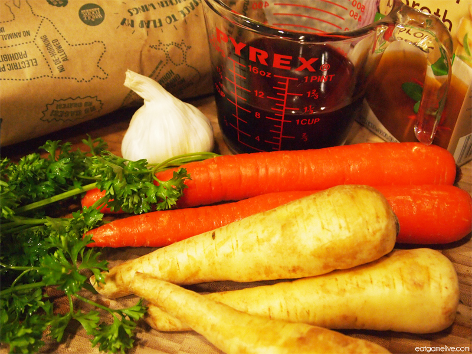
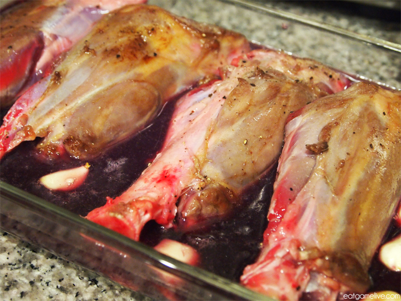
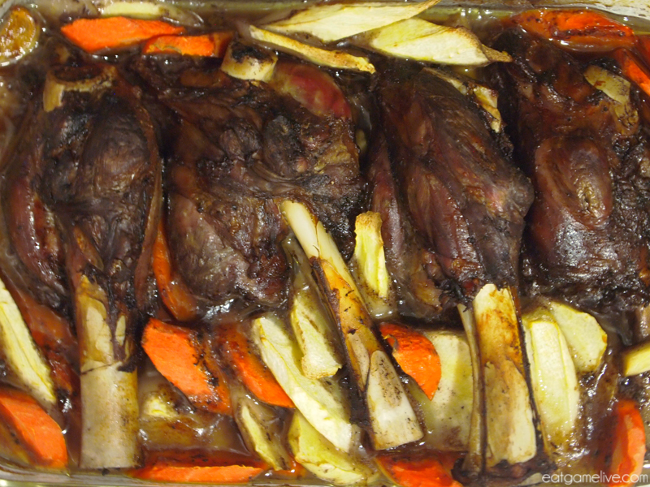
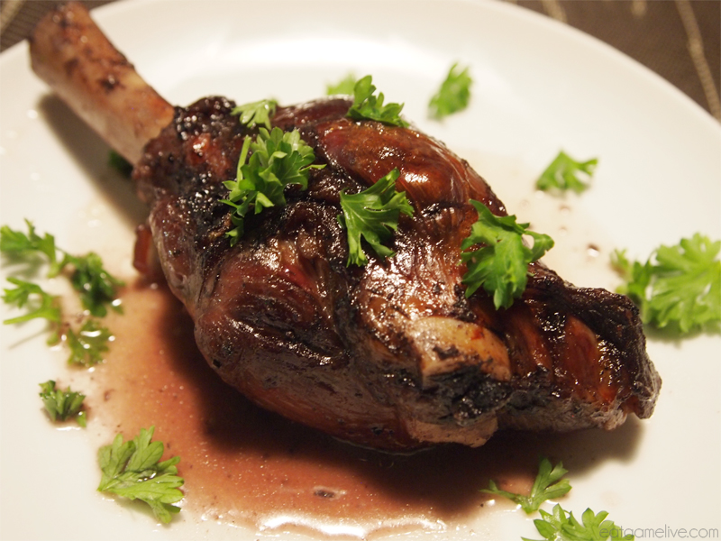

Braised River Beast
World of Warcraft

Ingredients
- salt
- pepper
- 6 cloves of garlic
- 1/2 tablespoon of butter
- 1 cup of red wine
- 1/2 cup of beef stock
- 2 lbs of lamb shank (~4 lamb shanks)
- 2 carrots, sliced
- 3 parsnips,sliced
- optional:parsley
Instructions
Prep time for this is about 25 minutes, or up to 45 minutes if you plan to french trim your lamb shanks. Cook time is ~1 hour, 45 minutes. This makes 4 servings.

Opening
- Season your lamb with salt and pepper.
- Put a pan on high heat and add in your butter.
- Sear the lamb for about 30 seconds each side, or until brown.
- Place lamb in a large baking dish. Pour in your red wine and stock. You should have enough liquid to cover 3/4 of the lamb shanks.

Mid game
- Preheat your oven to 350F.
- Place your garlic in the baking dish.
- Place the entire baking dish in the oven and bake for 1 hour.

Late game
- After an hour, flip over the lamb shanks.
- Add in your chopped vegetables and continue baking for the remaining 45 minutes.
- Remove from the oven and plate the lamb shanks and vegetables.
- Pour the remaining liquid into a pan and reduce on high heat for about 5 minutes.
- Drizzle the reduced red wine sauce over the lamb. Sprinkle chopped parsley over the plate.
- Eat!

Source-eatgamelive.com
Home